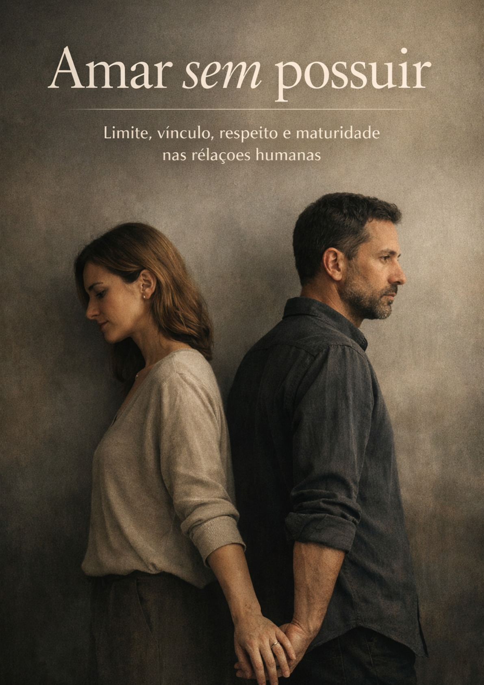
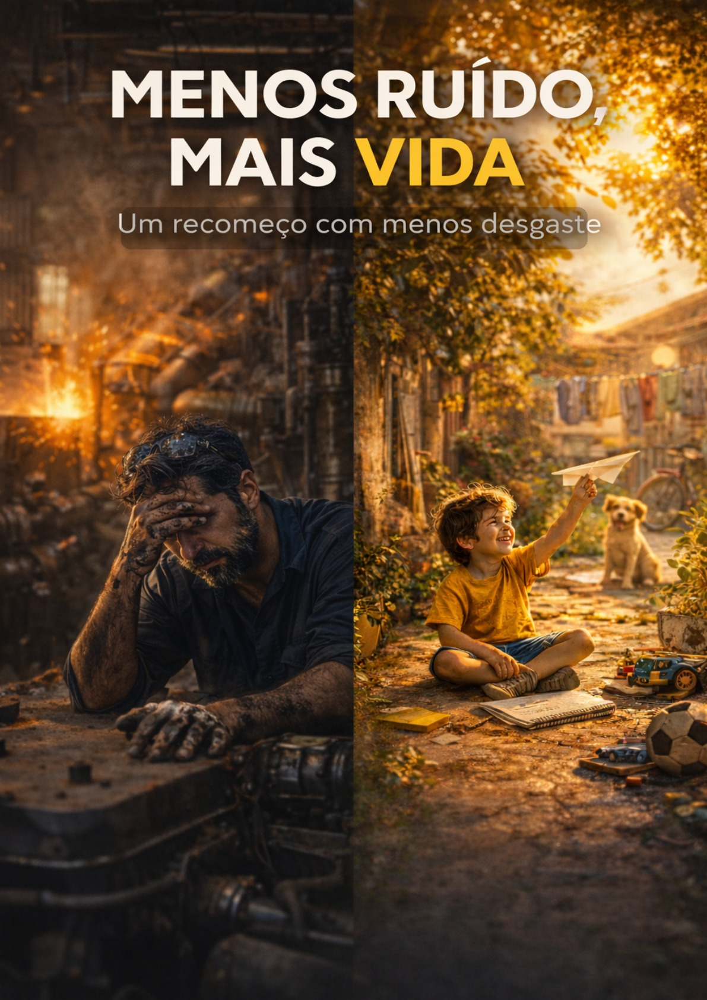
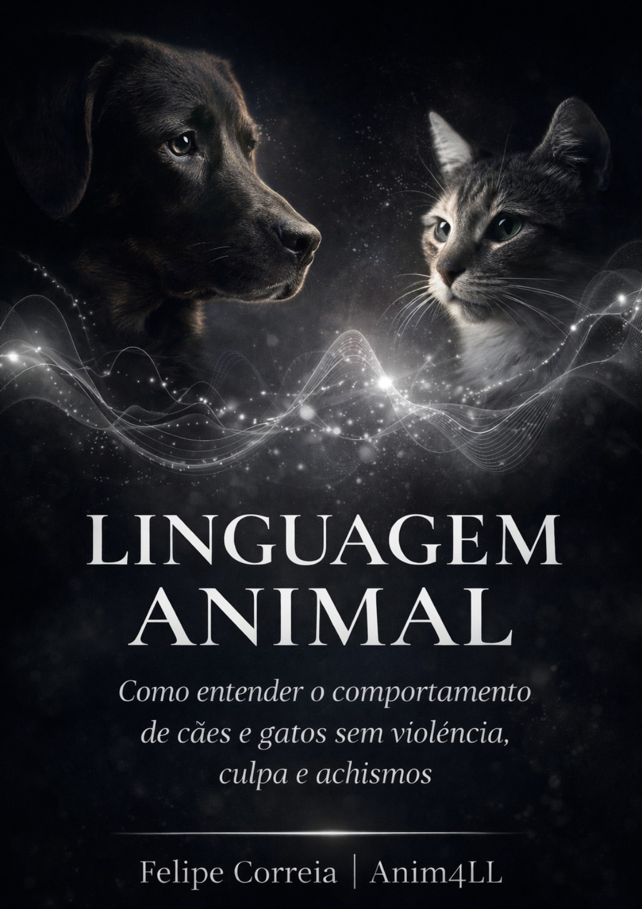
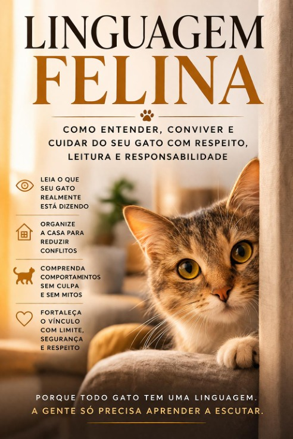
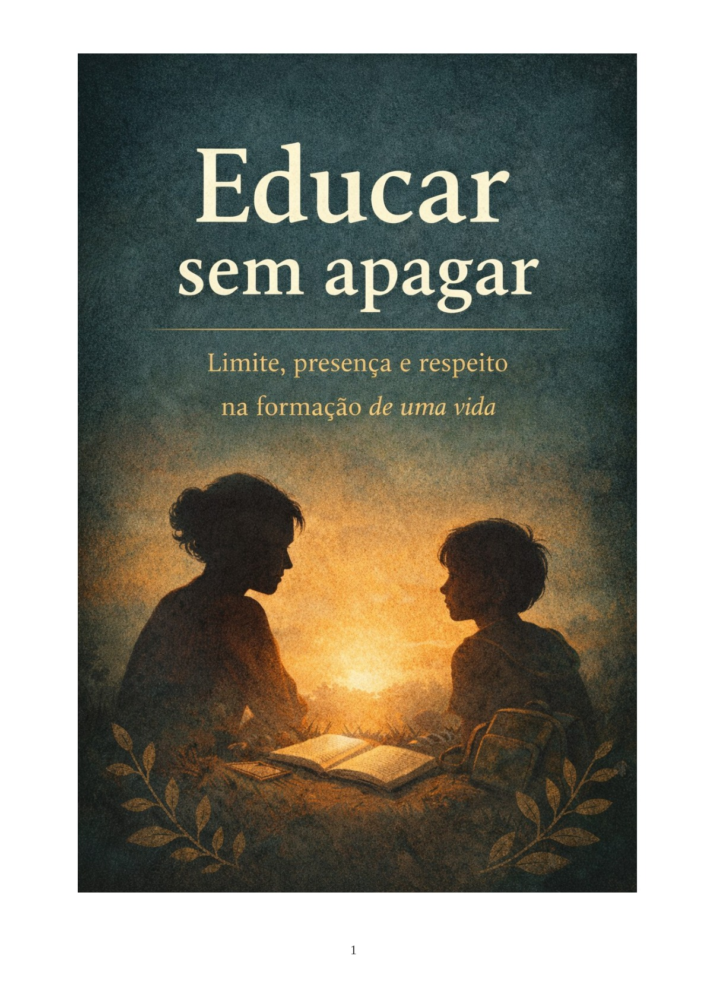
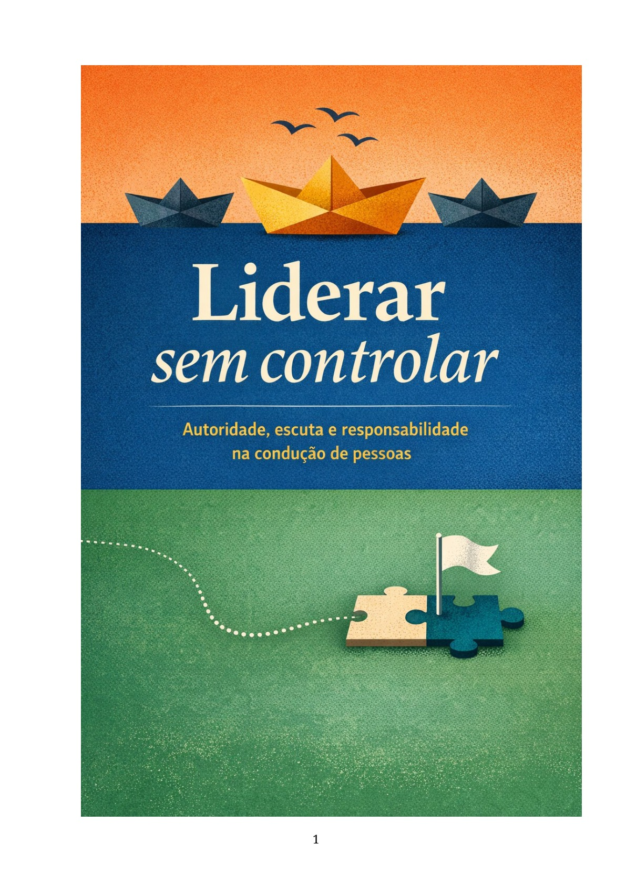

Vínculos humanos
Amar sem possuir
Um livro sobre limite, vínculo, respeito e maturidade nas relações humanas, com tom íntimo, adulto e emocionalmente contido.
Uma biblioteca inicial para apresentar todas as obras em uma única página, com clima sóbrio, literário e humano.
Aqui, o foco não é vender agressivamente. É mostrar o conjunto da obra com clareza, unidade visual e comentários curtos que deem identidade a cada livro. Depois, os links de compra podem entrar com calma.
Cada bloco ocupa pouco espaço e apresenta o essencial: tema, clima e lugar de cada livro dentro da biblioteca.

Um livro sobre limite, vínculo, respeito e maturidade nas relações humanas, com tom íntimo, adulto e emocionalmente contido.

Um recomeço com menos desgaste: lucidez, rotina mais humana e caminhos possíveis para trabalhar sem se destruir.

Uma leitura ética do comportamento de cães e gatos, sem violência, culpa ou achismos, voltada à convivência real.

Um livro sobre leitura, segurança, rotina e vínculo com gatos, sem invasão e sem interpretar distância como rejeição.

Formação com limite, presença e respeito: um livro sobre educar sem transformar cuidado em domínio.

Autoridade, escuta e responsabilidade na condução de pessoas, com foco em liderança sem esmagamento subjetivo.
A biblioteca pode crescer reunindo obras por afinidade temática, sem perder unidade visual.
Livros sobre relações humanas, trabalho, recomeço e modos mais dignos de viver, amar e atravessar mudanças.
Livros voltados à leitura comportamental de cães e gatos, com ênfase em respeito, ambiente, vínculo e manejo responsável.